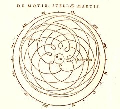

Historia de la observación de Marte
Los primeros registros de la observación de Marte se remontan a la
era de los antiguos astrónomos egipcios en el II milenio a. C. Más
tarde, aparecieron los primeros registros chinos sobre los
movimientos de Marte antes de la fundación de la dinastía Zhou (1045
a. C.). Los astrónomos babilónicos realizaron observaciones
detalladas sobre la posición de Marte, que sirvieron para
desarrollar técnicas aritméticas que predecían la posición futura
del planeta. Los antiguos filósofos griegos y los astrónomos
helenísticos desarrollaron un modelo geocéntrico para explicar los
movimientos del planeta. Las mediciones del diámetro angular de
Marte se pueden encontrar en antiguos textos griegos e indios. En el
siglo XVI, Nicolás Copérnico propuso un modelo heliocéntrico para el
sistema solar en el que los planetas siguen órbitas circulares
alrededor del Sol. Esto fue revisado por Johannes Kepler, quien pudo
ajustar la órbita elíptica de Marte a los datos observacionales. La
primera observación telescópica de Marte fue realizada por Galileo
Galilei en 1610. Un siglo después, los astrónomos descubrieron
distintas características del albedo del planeta, incluyendo el
punto negro de Syrtis Major y las capas polares. Fueron capaces de
determinar el período de rotación del planeta y la inclinación
axial. Estas observaciones se hicieron principalmente durante los
intervalos de tiempo en el que el planeta estaba situado en
oposición al Sol, en los cuales Marte se acercó más a la Tierra. A
principios del siglo XIX, mejores telescopios permitieron que las
características del albedo marciano fueran mapeadas en detalle. El
primer mapa crudo de Marte fue publicado en 1840, seguido por mapas
más refinados a partir de 1877 en adelante. Cuando los astrónomos
creyeron equivocadamente que habían detectado agua en la atmósfera
marciana, la idea de la existencia de vida en Marte se popularizó
entre el público. Percival Lowell creía que se podía ver una red de
canales artificiales en Marte.1 Estas características lineales
demostraron posteriormente ser una ilusión óptica, y se demostró que
la atmósfera era demasiado delgada para soportar un entorno parecido
a la Tierra. Se han observado nubes amarillas en Marte desde la
década de 1870. Eugène Antoniadi sugirió que se debían a arena o
polvo que soplaba el viento. Durante la década de 1920, se midió el
rango de temperatura de la superficie marciana; varió de –85 a 7° C.
Se encontró que la atmósfera planetaria era árida con solo trazos de
oxígeno y agua. En 1947, Gerard Kuiper demostró que la fina
atmósfera marciana contenía mucho dióxido de carbono;
aproximadamente el doble de la cantidad encontrada en la atmósfera
de la Tierra. La primera nomenclatura estándar para las
características del albedo de Marte fue adoptada en 1960 por la
Unión Astronómica Internacional. Desde la década de 1960, múltiples
naves espaciales robóticas han sido enviadas para explorar a Marte
desde la órbita y la superficie. El descubrimiento de meteoritos en
la Tierra originados en Marte permitieron realizar un examen de
laboratorio sobre las condiciones químicas en el planeta.
Mociones geocéntricas de Kepler de Marte en Astronomia Nova (1609)

Registros más antiguos
La existencia de Marte como un objeto errante en el cielo nocturno
fue registrada por antiguos astrónomos egipcios. En el segundo
milenio a. C. estaban familiarizados con el aparente movimiento
retrógrado del planeta, que parece moverse en dirección opuesta a
través del cielo. Marte fue retratado en el techo de la tumba de
Seti I, en el techo de Ramesseum,3 y en el mapa estelar de
Senenmut. Este último es el mapa estelar más antiguo conocido,
presuntamente realizado en el año 1534 a. C. basado en la posición
de los planetas.2 En el período del Imperio neobabilónico, los
astrónomos realizaban observaciones sistemáticas de las posiciones y
el comportamiento de los planetas. Para Marte, sabían, por ejemplo,
que el planeta realiza 37 períodos sinódicos, o 42 circuitos del
zodíaco cada 79 años. Los babilonios inventaron métodos aritméticos
para realizar pequeñas correcciones a las posiciones predichas de
los planetas. Esta técnica se derivó principalmente de las
mediciones de tiempo. Los registros chinos sobre las apariciones y
movimientos de Marte aparecieron antes de la fundación de la
dinastía Zhou (1045 a. C.) y, durante la dinastía Qin (221 a. C.),
los astrónomos mantuvieron registros cercanos de las conjunciones
planetarias, incluidas las de Marte. Las ocultaciones de Marte por
Venus se observaron en los años 368, 375 y 405. El período y el
movimiento de la órbita del planeta fue conocido en detalle durante
la dinastía Tang (618 a. C.). La temprana astronomía de la Antigua
Grecia fue influenciada por el conocimiento transmitido de la
cultura mesopotámica. Los babilonios asociaron a Marte con Nergal,
su dios de la guerra y la pestilencia, y los griegos conectaron al
planeta con su dios de la guerra, Ares. Durante este período, los
movimientos de los planetas eran de poco interés para los griegos;
los Trabajos y días de Hesiodo (aproximadamente 650 a. C.) no
mencionan a los planetas.
Observaciones telescópicas tempranas
En su aproximación más cercana, el tamaño angular de Marte es de 25
segundos de arco (una unidad de grado); esto es demasiado pequeño
poder verlo a simple vista. Por lo tanto, antes de la invención del
telescopio, no se sabía nada sobre el planeta además de su posición
en el cielo. El científico italiano Galileo Galilei fue la primera
persona que utilizó un telescopio para realizar observaciones
astronómicas. Sus registros indican que comenzó a observar Marte en
septiembre de 1610. Este instrumento era demasiado primitivo para
mostrar cualquier detalle superficial en el planeta, por lo que se
fijó el objetivo de ver si Marte exhibía fases de oscuridad parcial
similar a Venus o la Luna. Aunque no estaba seguro de su éxito, en
diciembre observó que Marte se había encogido en tamaño angular. El
astrónomo polaco Johannes Hevelius logró observar una fase de Marte
en 1645.
En 1644, el jesuita italiano Daniello Bartoli reportó haber visto
dos parches más oscuros en Marte. Durante las oposiciones de 1651,
1653 y 1655, cuando el planeta hizo sus acercamientos más cercanos a
la tierra, el astrónomo italiano Giovanni Riccioli y su estudiante
Francesco Maria Grimaldi observaron la reflectividad diferenciada en
Marte. La primera persona en dibujar un mapa de Marte que mostraba
características del terreno fue el astrónomo holandés Christiaan
Huygens. El 28 de noviembre de 1659 él hizo una ilustración de Marte
que mostró la región oscura distinta, conocida ahora como Syrtis
Major, y posiblemente una de las capas polares. El mismo año logró
medir el período de rotación del planeta, calculando aproximadamente
24 horas. Hizo una estimación aproximada del diámetro de Marte,
suponiendo que es aproximadamente el 60 % del tamaño de la Tierra,
lo cual se acerca al valor moderno del 53 %. El italiano Giovanni
Cassini fue probablemente el primero en mencionar la capa polar sur
de Marte, en 1666. En ese mismo año, utilizó observaciones de las
marcas de superficie en Marte para determinar un período de rotación
de 24 horas 40 minutos. Esto difiere del valor actualmente aceptado
en menos de tres minutos. En 1672, Huygens notó un casquillo blanco
borroso en el polo norte.
Después de que Cassini se convirtiera en el primer director del
Observatorio de París en 1671, abordó el problema de la escala
física del sistema solar. El tamaño relativo de las órbitas
planetarias era conocido por la tercera ley de Kepler, así que lo
que se necesitaba era el tamaño real de una de las órbitas del
planeta. Para este propósito, la posición de Marte se midió contra
las estrellas de fondo de diferentes puntos de la Tierra, midiendo
así la paralaje diurna del planeta. Durante este año, el planeta se
movía más allá de su órbita donde era más cercano al Sol (una
oposición de prehielo). Cassini y Jean Picard determinaron la
posición de Marte desde París, mientras que el astrónomo francés
Jean Richer realizó mediciones desde Cayena, América del Sur. Aunque
estas observaciones fueron obstaculizadas por la calidad de los
instrumentos, la paralaje calculada por Cassini llegó al 10 % del
valor correcto. El astrónomo inglés John Flamsteed realizó intentos
de medición comparables y tuvo resultados similares.